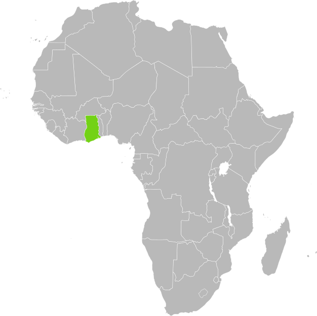

Ink, Clothing, Pottery and Afro-Brazilian History
Lincoln Clarete • S'2
Created: 2023-07-03 Mon 16:57
1. Adinkras
2. Where do they come from
2.1. Gold Coast (Where Ghana is nowadays)

2.2. Who created it?
Legend says that Ashanti people captured the king of Gyaman in battle who wore the patterns to express his sorrow for being captured. Alongside with the king the Ashanti people assimilated the Adinkras to their culture.
3. Where are they used
3.1. Clothing

3.2.

3.3.
3.4. Pottery

4. What do they mean
4.1. Mmere dane • time changes

- symbol of change, life's dynamics
4.2. Sankofa • return and get it
- symbol of importance of learning from the past. Value your heritage
4.3. Ese ne tekrema • the teeth and the tongue

- symbol of friendship and interdependence. The teeth and the tongue play interdependent roles in the mouth. They may come into conflict, but they need to work together.
4.4. Akoma ntoso • linked hearts

- symbol of understanding and agreement
4.5. Boa me na me mmoa wo • Help me and let me help you

- symbol of cooperation and interdependence
4.6. Fawodhodie • Independence

- symbol of independence, freedom, emancipation
- "From the expression: Fawodhodie ene obre na enam. Literal translation: "Independence comes with its responsibilities."
4.7. References
- Cloth As Metaphor by G.F. Kojo Arthur
- Cultural Symbols of the Asante people by Valentina A. Tetteh